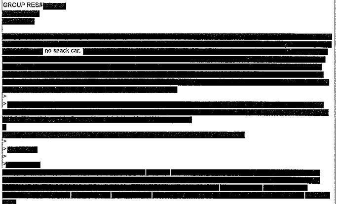

Public Records Requests (FOIA) Workshop
What is a Public Records Request?
- A tool to obtain data/records from (most) public agencies.
- i.e., a means to dig into nagging questions you have regarding both local and federal government.
What is considered a "Public Record"?
This can differ from state to state, but you can try for any tangible record created or maintained by government employees. Here is how the Illinois FOIA statute defines a Public Record:
(c) "Public records" means all records, reports, forms, writings, letters, memoranda, books, papers, maps, photographs, microfilms, cards, tapes, recordings, electronic data processing records, electronic communications, recorded information and all other documentary materials pertaining to the transaction of public business, regardless of physical form or characteristics, having been prepared by or for, or having been or being used by, received by, in the possession of, or under the control of any public body.
Who can make a Public Records Request?
- On a federal agency level, any U.S. citizen can make a request.
- On a state agency level, this can vary. Most state agencies allow requests from any U.S. citizen, but some require proof of residency from requesters.
- There are other restrictions sometimes (inmates).
What should I know before filing a Public Records Request?
- Research the contact information for the agency's FOIA/Public Records department and how to send them a request.
- Know your state/federal FOIA laws (the more you know, the better).
- Feel free to look at requests made by other groups and individuals for inspiration.
- Understand that the process can be a long one.
The Process
1. Write up your request. Be specific enough where the agency can best find your record, but vague enough for capturing as much relevant data as possible.
The Process
The Process
2. After the request is acknowledged by the agency, they have a time limit to respond to the request. They can, however, extend this by some means.
The Process
Some agencies will require fees to be paid for the amount of work. Sometimes state agencies quantify fees by breaking down the amount of work and "man-hours" that need to go into processing the request/responsive documents. Many times federal agencies require fees without much insight.
Don't trust fee estimates.
Many states have limits on the costs agencies can charge for requests. You can challenge an agency if you believe it is has set an unrealistic price via an appeal or lawsuit. Other times, they have no right to charge for records at all. Reading the local statute helps. Agencies, especially police departments, often lie about how much work needs to be done.
The Process
The Process
The Process
3. The waiting game.
The Process
At this point (after the waiting) a number of things can happen:
4a. You will hopefully be endowed with responsive records from the agency.
4b. You might get be asked to narrow your records.
4c. You might have your request denied for various reasons.
Denials

Denials

Denials - Fighting Back
You are not completely defenseless regarding denials to your request. There are a few options here:
- Appeal (often must be ~20 days after rejection
- Seek legal aid.
Denials - Fighting Back
Denials - Fighting Back
Redactions
Redactions
Exemption (b)(6) permits the government to withhold all information about individuals in "personnel and medical files and similar files" when the disclosure of such information "would constitute a clearly unwarranted invasion of personal privacy."
Redactions
Redactions will happen. Agencies are required to cite exemptions within the state or federal public records law for redactions. They are often worth fighting.
Exemptions - Federal-level
(b)(1) - classified for "National Security"
(b)(2) - internal personnel rules
(b)(3) - exempt by any other statute
(b)(4) - trade secrets/commercial financial info
(b)(5) - "Privileged" memos/letters
Exemptions - Federal-level
(b)(6) - Privacy (personnel or medical files)
(b)(7) - Law enforcement records (can be vague)
(b)(8) - Financial institution regulatory records
(b)(9) - "Geological and geophysical information an data, including maps, concerning wells."
Exemptions
Exemptions
"Pentagon claims list of information exempt from FOIA is exempt from FOIA"
Tips
You can always re-send a (botched, rejected, etc) request to an agency.
Tips
Never submit requests in the form of a question. Agencies are not obliged to respond to these. .
Tips
Many agencies have FOIA portals available to see the requests others have submitted in the past and their responses, but you can always FOIA an agency for their internal FOIA logs.
Tips
Tips
MuckRock is your friend:
Tips
Some agencies have a decent amount of forms, directives , procedures, and program information available on webpages or databases that are public facing. This can help you research or prepare for FOIA requests. Additionally, public news reports sometimes contain good hints .
Tips
Tips
Divide & Conquer
Sometimes a request may be denied for being unduly burdensome . Agencies use this denial often. In most states there is a "balancing test" between the public's right to know and the burden placed on the agency's operations. If the records are very important, but there are a lot of documents that need to be worked on, the balancing test will have to be applied. Other times, it may be easier to split up a request into smaller requests and file multiple smaller requests at the same time for the information.
Tips
Deciding when to sue
FOIA Lawyers generally like pro-bono work, specifically because FOIA violations usually result in compensation, and the cases aren't difficult. Usuaully you'll want to sue if the agency has completely ignored your request, has continued to double-down on very expensive fees, or the appeals process has awarded you nothing. There are guides .
Tips
After numerous FOIA requests and lawsuits, Lucy Parsons Labs—in collaboration with Muckrock, independent journalist Joel Handley, and the Chicago Reader—liberated the full record of CPD’s forfeiture income and expenditures from 2009 through 2015.